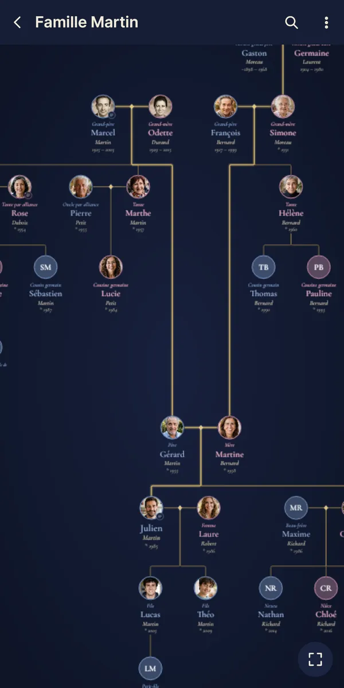

Calculer un lien de parenté : cousin issu de germain, grand-oncle, petit-neveu
Le fils de votre cousin est-il votre cousin ou votre neveu ? Qu'est-ce qu'un oncle à la mode de Bretagne ? Indiquez où se trouve votre ancêtre commun et le calculateur vous donne le nom du lien de parenté et son degré.
L'ancêtre commun est la personne dont vous descendez tous les deux. Avec un cousin germain, ce sont vos grands-parents ; avec un cousin issu de germain, vos arrière-grands-parents. Si l'un descend de l'autre (un petit-fils, une arrière-grand-mère), choisissez « Moi » ou « L'autre personne ».
Le nom de chaque lien de parenté
Tout dépend du nombre de générations entre chacun de vous et l'ancêtre commun :
- Frères et sœurs : vous avez les mêmes parents.
- Cousins germains : vous avez les mêmes grands-parents. Vos parents sont frères et sœurs.
- Cousins issus de germains : vous avez les mêmes arrière-grands-parents. Vos parents sont cousins germains.
- Grand-oncle ou grand-tante : le frère ou la sœur de votre grand-parent. Vous êtes son petit-neveu ou sa petite-nièce.
- Oncle à la mode de Bretagne : le cousin germain de votre père ou de votre mère. Vous êtes son neveu à la mode de Bretagne.
Le fils de votre cousin germain n'est donc ni votre cousin germain ni votre neveu : c'est votre neveu à la mode de Bretagne. Vos enfants et les siens, eux, sont cousins issus de germains.
Tableau des liens de parenté
Cherchez dans la ligne ce qu'est l'ancêtre commun pour vous, et dans la colonne ce qu'il est pour l'autre personne. La case indique ce qu'est cette personne pour vous (au féminin : tante, cousine germaine, petite-nièce…).
| Pour vous ↓ · pour l'autre → | Parents | Grands-parents | Arrière-grands-parents | Arrière-arrière-grands-parents | Arrière-arrière-arrière-grands-parents |
|---|---|---|---|---|---|
| Parents | frère | neveu | petit-neveu | arrière-petit-neveu | arrière-arrière-petit-neveu |
| Grands-parents | oncle | cousin germain | neveu à la mode de Bretagne | cousin éloigné | cousin éloigné |
| Arrière-grands-parents | grand-oncle | oncle à la mode de Bretagne | cousin issu de germain | cousin éloigné | cousin éloigné |
| Arrière-arrière-grands-parents | arrière-grand-oncle | cousin éloigné | cousin éloigné | cousin issu d'issu de germain | cousin éloigné |
| Arrière-arrière-arrière-grands-parents | arrière-arrière-grand-oncle | cousin éloigné | cousin éloigné | cousin éloigné | cousin éloigné |
Les degrés de parenté
Le Code civil compte les degrés en remontant d'une personne jusqu'à l'ancêtre commun, puis en redescendant jusqu'à l'autre, une génération étant un degré :
| Degré | Membres de la famille |
|---|---|
| 1er | Parents et enfants |
| 2e | Grands-parents, petits-enfants, frères et sœurs |
| 3e | Arrière-grands-parents, arrière-petits-enfants, oncles, tantes, neveux et nièces |
| 4e | Cousins germains, grands-oncles, grands-tantes, petits-neveux et petites-nièces |
Avec la famille de votre conjoint (beaux-parents, beaux-frères…), on parle d'alliance.
Votre arbre, avec le lien de parenté de chacun
Dans Ramo, inutile de calculer : touchez « Parenté » et chaque fiche de l'arbre indique ce qu'est cette personne pour celle que vous choisissez (grand-père, tante, cousin germain, belle-sœur, belle-mère…), belle-famille comprise.

C'est gratuit pour commencer, et l'arbre se partage en PDF avec toute la famille pour que chacun voie où il se trouve.
Autres guides